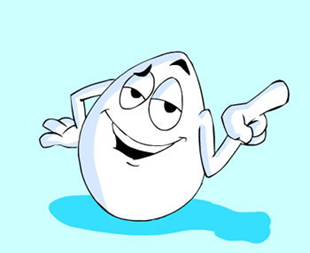

HUEVO SALTARÍN
Se podría definir las Naciones Unidas huevo como la célula de tamaño que existe alcalde (ya que en realidad se trata del óvulo u ovocito de un ave), o como, un alimento muy completo y bastante frecuente en nuestra gastronomía. Sin embargo, desde un punto de vista educativo es algo mucho más amplio y complejo. SE TRATA DE un recurso didáctico interdisciplinar. Dicho alimento nos permite abordar conceptos de Biología, Física, Química, etc.
Un huevo de gallina consta de dos partes: la clara y la yema (parte nutritiva). Además, su cáscara está formada por carbonato de calcio en un 94%.
¿Qué nos hace falta?
- Huevos crudos de gallina.
- Vinagre.
- Bote de cristal.
- Miel.

¿Qué vamos a hacer?
Primero PIDE permiso a tus padres. Puede producirse algún que otro olor desagradable. Una vez hayan consentido sigue con el experimento.
Se toma un huevo de gallina y se sumerge en un bote que contiene vinagre. Se tapa dicho frasco para evitar que el olor poco agradable, tanto del ácido acético que forma el vinagre como del acetato de calcio formado, salga al exterior.
Tras un breve periodo de tiempo se observa la aparición de pequeñas burbujas que se Deben a la generación de un gas: el dióxido de carbono.
Lo que en realidad está ocurriendo en el interior del huevo, queda descrito Mediante la siguiente reacción:
Vinagre + cáscara del huevo → Gas
(ácido acético) + carbonato cálcico → CO2 + H2O + acetato de calcio
Poco a poco se va viendo cómo la cáscara se hace más fina hasta "desaparecer" en un tiempo aproximado de dos días. Siendo muy recomendable renovar el vinagre. Estos cambios se Deben A que el ácido acético (que forma el vinagre) al reaccionar con el carbonato de calcio va desapareciendo. Siendo Necesario más reactivo (vinagre) para que le Proceso Continúe y se completa en su Totalidad.
Además de perder la cáscara, la membrana semipermeable que envuelve a y La célula Está situada INMEDIATAMENTE Debajo de ella, adquiere consistencia gomosa. Esto Permite que se PUEDAN llegar a realizar pequeños botes con el huevo sin que se rompa. Ya tenemos nuestro huevo saltarín.
Completa tu experimento:
Se observa que el huevo introducido "en vinagre no solamente" pierde "su cáscara y adquiere la consistencia gomosa, sino que Aumenta su tamaño DEBIDO A que parte del líquido atraviesa la membrana semipermeable.
Si se introducen en miel dicho líquido Seguirá el sentido inverso, esto es, saldrá del huevo, lo que provoca una Disminución de su tamaño.